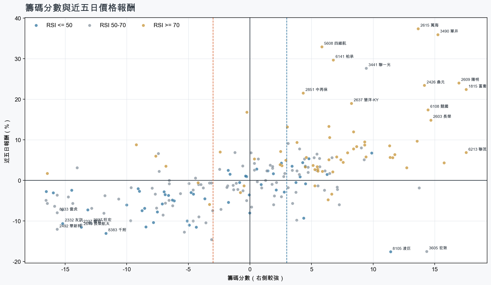
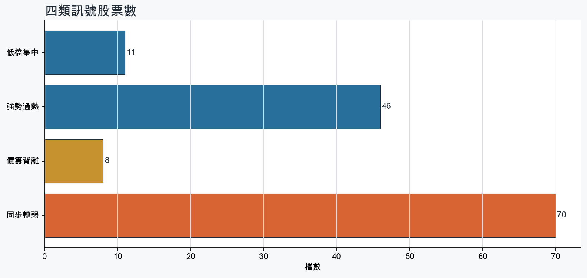
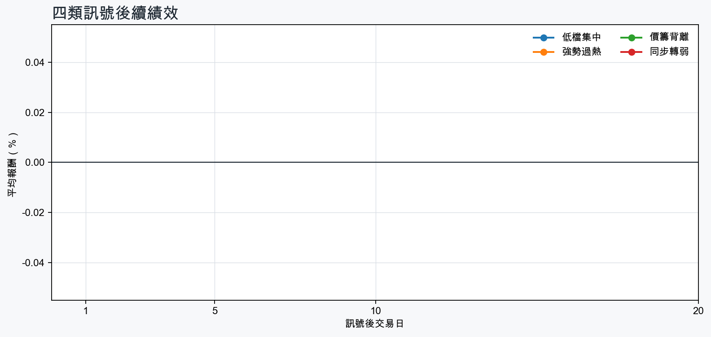

市場情緒中性分歧
近5日法人合計-836,858 張
篩選池上漲比例47.7%
籌碼好 / RSI低10 檔
籌碼差 / 價跌10 檔



01
籌碼好 / RSI低
優先研究基本面；法人續買且價格止穩時，才適合分批觀察。
| 股票 / 建議 | 籌碼 | RSI / 價格 | 集保四週 | 基本面 | 近期消息 |
|---|---|---|---|---|---|
| 2618 長榮航優先觀察 | +9.9法人 +52,982 張 / 5 天 | 44.75日 +6.8% | +1.65 pp1000張 +1.55 pp | 單月營收年增 +21.4%；累計營收年增 +17.1%；上半年 EPS 2.24仍需觀察下一期財報延續性 | 長榮航攜手貨運代理商 AIT、台塑石化推低碳運輸 首年1.5萬噸減碳效益 - UDN2645 長榮航太 - https://m.moneydj.com/f1a.aspx... - 股市爆料同學會 - CMoney |
| 8105 凌巨優先觀察 | +11.4法人 +10,814 張 / 2 天 | 31.85日 -17.6% | +3.57 pp1000張 +3.83 pp | 單月營收年增 +11.9%；累計營收年增 +0.5%仍需觀察下一期財報延續性 | 凌巨財報揭露將恢復交易 第2季EPS 0.16元 - UDN【即時新聞】最新！凌巨(8105)補交財報恢復交易，上半年由虧轉盈EPS達0.59元 - CMoney投資網誌 |
| 2547 日勝生優先觀察 | +6.3法人 +2,835 張 / 5 天 | 48.55日 +1.5% | +0.98 pp1000張 +1.16 pp | 單月營收年增 +152.3%；累計營收年增 +60.2%；上半年 EPS 0.01仍需觀察下一期財報延續性 | 日勝生強攻中捷聯開案 - UDN |
| 2101 南港優先觀察 | +4.8法人 +3,762 張 / 5 天 | 49.45日 +5.4% | -0.19 pp1000張 -0.12 pp | 單月營收年增 +43.1%；累計營收年增 +165.8%；上半年 EPS 4.07仍需觀察下一期財報延續性 | 〈房產〉高鐵延伸宜蘭拍板 20分鐘直達南港 區域房市可望迎交通紅利 - news.cnyes.com南港傳奇６？舞台劇吔！ - peopo.org |
| 3231 緯創優先觀察 | +4.4法人 -38,931 張 / 0 天 | 41.55日 -9.3% | +4.71 pp1000張 +4.59 pp | 單月營收年增 +60.8%；累計營收年增 +88.2%；上半年 EPS 7.78上半年營益率 3.6% | 【Hot台股】緯創盤中急拉5%又跳水！網喊「假拉大出貨」分析師：多空交戰拉回可買 - Yahoo股市輝達法說再淪法會？鴻海、緯創、廣達、仁寶...老AI全拉黑分析師「5個字」畫重點：這2檔拉回買- 上市櫃 - 旺得富理財網 |
| 4904 遠傳優先觀察 | +3.4法人 +8,728 張 / 5 天 | 45.85日 +3.5% | -0.10 pp1000張 -0.21 pp | 單月營收年增 +14.9%；累計營收年增 +10.8%；上半年 EPS 2.14仍需觀察下一期財報延續性 | 台達、樺漢、遠傳、中華電信、寶舖建設到亞洲水泥齊聚2026 Build for NextGen一次看懂下一代建築產業鏈 - Yahoo新聞遠傳秀三大智慧交通解決方案 助攻淨零轉型 - Yahoo股市 |
| 5880 合庫金優先觀察 | +4.5法人 +28,888 張 / 5 天 | 34.65日 +3.5% | +0.47 pp1000張 +0.55 pp | 單月營收年增 +20.4%；累計營收年增 +17.6%仍需觀察下一期財報延續性 | 未抓到近期標題 |
| 2886 兆豐金優先觀察 | +4.5法人 +95,093 張 / 5 天 | 30.75日 -0.8% | +0.00 pp1000張 -0.01 pp | 單月營收年增 +4.1%；累計營收年增 +16.7%仍需觀察下一期財報延續性 | 兆豐金攜產官學 建構氫能橋梁 - 中時新聞網氫能驅動淨零未來兆豐金攜手產官學探討氫能產業新契機- 金融 - 工商時報 |
| 2892 第一金優先觀察 | +4.1法人 +62,090 張 / 5 天 | 31.75日 +0.9% | +0.19 pp1000張 +0.21 pp | 單月營收年增 +2.4%；累計營收年增 +18.6%仍需觀察下一期財報延續性 | 未抓到近期標題 |
| 2646 星宇航空優先觀察 | +4.3法人 +8,327 張 / 5 天 | 49.05日 +4.4% | +0.23 pp1000張 +0.17 pp | 單月營收年增 +42.8%；累計營收年增 +32.0%上半年 EPS -0.11；上半年營益率 1.8% | 百年靈×星宇航空二度聯名！三萬英呎高空揭幕Cosmonaute腕錶，天然隕石面盤每只都不一樣 - ELLE百年靈登上3萬英呎揭新作 再攜星宇航空演繹飛行精神 天然隕石面盤全台限量62只 - 自由時報 |
02
籌碼好 / RSI高
趨勢強但不追價，等待量縮、RSI降溫或回測支撐。
| 股票 / 建議 | 籌碼 | RSI / 價格 | 集保四週 | 基本面 | 近期消息 |
|---|---|---|---|---|---|
| 1815 富喬等拉回，不追價 | +17.6法人 +54,716 張 / 5 天 | 94.15日 +22.4% | +8.82 pp1000張 +7.89 pp | 單月營收年增 +68.1%；累計營收年增 +46.9%；上半年 EPS 2.24仍需觀察下一期財報延續性 | PCB綠光罩頂！「這檔」慘吞連5跌拖富喬、台燿、金居挫4% 載板四雄全走跌 - Yahoo股市富喬（1815）做什麼？AI玻纖布需求爆發，營收、籌碼與後市一次看｜股市話題｜豐雲學堂2026 年 08 月 - sinotrade.com.tw |
| 6214 精誠等拉回，不追價 | +15.8法人 +5,798 張 / 3 天 | 78.25日 +4.4% | +5.85 pp1000張 +8.12 pp | 單月營收年增 +31.8%；累計營收年增 +36.2%；上半年 EPS 6.15上半年營益率 4.3% | 精誠擴大日本布局 - UDN精誠攜手伊藤忠搶攻神山供應鏈- 財經要聞- 工商時報 - 中時新聞網 |
| 6213 聯茂等拉回，不追價 | +17.6法人 +5,849 張 / 5 天 | 98.35日 +6.9% | +6.64 pp1000張 +7.53 pp | 單月營收年增 +96.9%；累計營收年增 +34.7%；上半年 EPS 4.39仍需觀察下一期財報延續性 | 3532 台勝科- 謝謝聯茂- 股市爆料同學會 - CMoney【10:35 即時新聞】聯茂(6213)股價走強漲逾4%，高階CCL供給吃緊與AI伺服器需求支撐＋法人與主力買盤延續推升多方結構 - CMoney投資網誌 |
| 2609 陽明等拉回，不追價 | +17.0法人 +170,866 張 / 5 天 | 92.35日 +24.0% | +4.76 pp1000張 +4.63 pp | 單月營收年增 +34.6%；累計營收年增 +5.8%；上半年 EPS 2.05上半年營益率 7.6% | 貨櫃三雄全寫今年新高！萬海單月漲贏前七月7倍股價 陽明從虧錢變大賺 - Yahoo股市萬海(2615)股價月飆43%！陽明(2609)、長榮(2603)...航運股大噴出還能追？最新目標價！誰最值得買？老手點出「下船時機」 - 今周刊 |
| 2408 南亞科等拉回，不追價 | +12.7法人 +34,937 張 / 4 天 | 74.95日 +3.1% | +2.86 pp1000張 +3.28 pp | 單月營收年增 +719.6%；累計營收年增 +660.9%；上半年 EPS 23.38仍需觀察下一期財報延續性 | 記憶體成提款機！華邦電、南亞科走疲族群一片綠 分析師揭操作策略 - Yahoo股市晶技、南亞科權證看旺- 日報 - 工商時報 |
| 1709 和益等拉回，不追價 | +13.6法人 +7,752 張 / 3 天 | 80.75日 +9.7% | +4.15 pp1000張 +4.16 pp | 單月營收年增 +83.3%；累計營收年增 +14.9%；上半年 EPS 1.30仍需觀察下一期財報延續性 | 8/24台股交易回顧｜和益(1709)漲勢驚人-林恩如 - CMoney投資網誌 |
| 2426 鼎元等拉回，不追價 | +14.2法人 +10,199 張 / 3 天 | 77.05日 +23.4% | +4.75 pp1000張 +4.05 pp | 單月營收年增 +36.3%；累計營收年增 +2.3%；上半年 EPS 0.28上半年營益率 5.8% | 未抓到近期標題 |
| 2603 長榮等拉回，不追價 | +14.7法人 +73,617 張 / 5 天 | 87.95日 +14.8% | +3.62 pp1000張 +3.50 pp | 單月營收年增 +43.1%；累計營收年增 +4.2%；上半年 EPS 11.24仍需觀察下一期財報延續性 | 長榮航空攜手貨運代理商AIT、微軟推動低碳運輸 首年創1.5萬減碳效益 - UDN長榮大學USR跨國實踐 攜手企業共推永續行動 - 台灣教會公報新聞網 |
| 2027 大成鋼等拉回，不追價 | +11.4法人 +23,345 張 / 4 天 | 70.15日 +5.7% | +2.76 pp1000張 +3.22 pp | 單月營收年增 +46.1%；累計營收年增 +32.6%；上半年 EPS 3.10仍需觀察下一期財報延續性 | 未抓到近期標題 |
| 3037 欣興等拉回，不追價 | +11.8法人 +35,444 張 / 5 天 | 77.85日 +6.4% | +2.68 pp1000張 +2.27 pp | 單月營收年增 +43.7%；累計營收年增 +30.8%；上半年 EPS 11.70仍需觀察下一期財報延續性 | 欣興、南電全倒 PCB族群遭潑綠油漆！「三哥」點火殺出重圍 - Yahoo新聞景碩、欣興、南電…外資狂買它11天5萬張為哪樁？ABF缺到2028年，最新目標價這檔還有6成空間 - 今周刊 |
03
籌碼差 / 股價上漲
可能是事件行情或軋空；沒有籌碼改善前避免追高。
| 股票 / 建議 | 籌碼 | RSI / 價格 | 集保四週 | 基本面 | 近期消息 |
|---|---|---|---|---|---|
| 8358 金居背離警戒，避免追高 | -16.4法人 -6,048 張 / 1 天 | 74.65日 +1.8% | -13.84 pp1000張 -16.32 pp | 單月營收年增 +54.9%；累計營收年增 +44.9%；上半年 EPS 4.22仍需觀察下一期財報延續性 | PCB綠光罩頂！「這檔」慘吞連5跌拖富喬、台燿、金居挫4% 載板四雄全走跌 - Yahoo股市欣興、南電、景碩、臻鼎-KY、金居、尖點...PCB買誰最賺？杜金龍點名「這檔」爆炸性強漲，11月末升段首選 - 今周刊 |
| 3388 崇越電背離警戒，避免追高 | -9.2法人 -3,370 張 / 0 天 | 72.95日 +8.8% | -1.22 pp1000張 -0.90 pp | 單月營收年增 +19.5%；累計營收年增 +19.2%；上半年 EPS 3.41仍需觀察下一期財報延續性 | 3388 崇越電- 仍舊看好- 股市爆料同學會 - CMoney |
| 5425 台半背離警戒，避免追高 | -14.0法人 -12,138 張 / 2 天 | 64.85日 +3.2% | -4.18 pp1000張 -4.31 pp | 單月營收年增 +24.1%；累計營收年增 +5.5%；上半年 EPS 1.52仍需觀察下一期財報延續性 | 強茂、台半營運看俏- 日報 - 工商時報 |
| 1708 東鹼背離警戒，避免追高 | -7.4法人 -3,121 張 / 2 天 | 64.45日 +6.6% | -1.45 pp1000張 -1.20 pp | 單月營收年增 +24.7%；累計營收年增 +13.4%；上半年 EPS 1.98仍需觀察下一期財報延續性 | 未抓到近期標題 |
| 6125 廣運背離警戒，避免追高 | -7.7法人 -2,197 張 / 0 天 | 74.65日 +6.0% | -0.70 pp1000張 -0.47 pp | 單月營收年增 +4.0%；累計營收年增 +32.8%；上半年 EPS 0.15上半年營益率 -9.7% | 廣運2026年業績挑戰新高 - UDN6125 廣運 - 沒人要的垃圾 - 股市爆料同學會 - CMoney |
| 8039 台虹背離警戒，避免追高 | -6.8法人 -8,506 張 / 1 天 | 74.95日 +3.5% | -0.32 pp1000張 -0.01 pp | 累計營收年增 +1.1%；上半年 EPS 1.56單月營收年增 -6.1%；上半年營益率 6.2% | 【即時新聞】台虹(8039)傳打入輝達帶量急拉！這「7檔概念股」走勢大分歧？ - CMoney投資網誌PTFE概念股怎麼選？台虹(8039)、亞電(4939) 近期股價強勢！產品特色與投資邏輯有何不同？｜股市話題 - sinotrade.com.tw |
| 2439 美律背離警戒，避免追高 | -7.4法人 -2,580 張 / 1 天 | 57.85日 +2.2% | -0.08 pp1000張 -0.98 pp | 累計營收年增 +9.9%；上半年 EPS 1.54單月營收年增 -0.3%；上半年營益率 1.0% | 美律完成減資每股淨值升至67.515元 Q3迎接美系新機與音箱拉貨潮 - news.cnyes.com美律Q3營收估雙增，單季EPS拚近四季高- 新聞 - MoneyDJ |
| 2302 麗正背離警戒，避免追高 | -4.4法人 -2,453 張 / 2 天 | 57.25日 +0.6% | +0.28 pp1000張 +0.00 pp | 單月營收年增 +81.2%；累計營收年增 +30.5%；上半年 EPS 0.60仍需觀察下一期財報延續性 | 未抓到近期標題 |
04
籌碼差 / 股價下跌
籌碼與價格同弱，原則上迴避，等待法人與大戶同時回補。
| 股票 / 建議 | 籌碼 | RSI / 價格 | 集保四週 | 基本面 | 近期消息 |
|---|---|---|---|---|---|
| 2492 華新科迴避，等待籌碼翻正 | -15.7法人 -25,603 張 / 1 天 | 56.65日 -12.1% | -8.49 pp1000張 -7.87 pp | 單月營收年增 +42.0%；累計營收年增 +18.7%；上半年 EPS 4.93仍需觀察下一期財報延續性 | 一座AI機櫃狂吃100萬顆被動元件！國巨、華新科訂單升溫 跌深反攻有戲？ - 經濟日報國巨被點菜！郭哲榮加碼「進場價曝光」，華新科、信昌電…被動元件股看好誰？喊它是垃圾：讓我少賺1億 - 今周刊 |
| 2332 友訊迴避，等待籌碼翻正 | -15.2法人 -14,369 張 / 0 天 | 38.85日 -10.6% | -4.05 pp1000張 -4.12 pp | 單月營收年增 +4.7%；累計營收年增 +9.1%上半年 EPS -0.07；上半年營益率 1.4% | 未抓到近期標題 |
| 2645 長榮航太迴避，等待籌碼翻正 | -13.7法人 -8,422 張 / 0 天 | 45.05日 -11.5% | -3.35 pp1000張 -2.94 pp | 單月營收年增 +18.5%；累計營收年增 +13.3%；上半年 EPS 4.59仍需觀察下一期財報延續性 | 2645 長榮航太 - https://m.moneydj.com/f1a.aspx... - 股市爆料同學會 - CMoney長榮航太增班+擴廠，業務雙引擎成長動能強- 新聞 - MoneyDJ |
| 8383 千附迴避，等待籌碼翻正 | -11.7法人 -2,205 張 / 1 天 | 43.45日 -13.0% | -1.94 pp1000張 -3.89 pp | 單月營收年增 +77.5%；累計營收年增 +58.4%；上半年 EPS 2.66仍需觀察下一期財報延續性 | 未抓到近期標題 |
| 2327 國巨*迴避，等待籌碼翻正 | -13.7法人 -19,856 張 / 0 天 | 50.35日 -10.9% | -3.58 pp1000張 -3.76 pp | 單月營收年增 +51.5%；累計營收年增 +32.5%；上半年 EPS 8.48仍需觀察下一期財報延續性 | 2327 國巨* - 國巨上週漲停那天沒賣真的會哭暈在廁所🥲 - 股市爆料同學會 - CMoney焦點股》國巨*：散戶哀號 上週沒賣恐哭暈 - 自由時報 |
| 8033 雷虎迴避，等待籌碼翻正 | -15.7法人 -3,661 張 / 1 天 | 55.55日 -7.9% | -7.21 pp1000張 -6.91 pp | 累計營收年增 +7.4%；上半年 EPS 0.62單月營收年增 -9.5%；上半年營益率 -0.3% | 8033 雷虎- 資深大哥說：這個新聞出來，(禮拜三) 無人機發展就會順利了- 股市爆料同學會 - CMoney |
| 2337 旺宏迴避，等待籌碼翻正 | -12.9法人 -44,550 張 / 1 天 | 58.65日 -10.6% | -3.54 pp1000張 -3.74 pp | 單月營收年增 +180.5%；累計營收年增 +137.8%；上半年 EPS 4.82仍需觀察下一期財報延續性 | 2337 旺宏- 開盤前預測- 股市爆料同學會 - CMoney聯電、群創、國巨、旺宏...台股反彈7千點，你的股票還趴著？14檔落後補漲股選誰？進出場位階全解析 - 今周刊 |
| 3211 順達迴避，等待籌碼翻正 | -13.0法人 -2,835 張 / 0 天 | 60.25日 -10.4% | -3.15 pp1000張 -2.37 pp | 單月營收年增 +20.9%；累計營收年增 +21.7%；上半年 EPS 3.40仍需觀察下一期財報延續性 | BBU族群暴衝！順達新盛力閃紅燈...近萬張排隊等買 分析師看法出爐 - Yahoo股市全力追趕，順達今年EPS估將超越去年並逾11元 - MoneyDJ |
| 1810 和成迴避，等待籌碼翻正 | -15.2法人 -7,969 張 / 1 天 | 59.45日 -7.3% | -4.20 pp1000張 -5.90 pp | 上半年 EPS 3.62單月營收年增 -3.7%；累計營收年增 -7.6%；上半年營益率 -10.4% | 和成不只馬桶！抗彈陶瓷軍規級、碳纖維輪圈對標法拉利保時捷，型男副董：百年老店不會一輩子只做馬桶 - 今周刊〈焦點股〉和成擁軍工、半導體轉機雙題材 成交爆量登漲停 - news.cnyes.com |
| 5483 中美晶迴避，等待籌碼翻正 | -15.9法人 -14,704 張 / 1 天 | 52.35日 -6.4% | -5.12 pp1000張 -4.32 pp | 單月營收年增 +27.7%；累計營收年增 +5.4%；上半年 EPS 5.02仍需觀察下一期財報延續性 | ABF 增層膜供應吃緊掀搶料潮 中美晶迎轉單 - 經濟日報《 CPO往上游看｜中美晶集團 矽光子供應鏈逐漸成形 》 - CMoney |
BACKTEST
長期規律追蹤
每次訊號後自動補算1、5、10、20個交易日報酬；樣本不足時不做結論。

| 訊號組別 | 1日 | 5日 | 10日 | 20日 |
|---|---|---|---|---|
| 低檔集中 | -資料累積中 | -資料累積中 | -資料累積中 | -資料累積中 |
| 強勢過熱 | -資料累積中 | -資料累積中 | -資料累積中 | -資料累積中 |
| 價籌背離 | -資料累積中 | -資料累積中 | -資料累積中 | -資料累積中 |
| 同步轉弱 | -資料累積中 | -資料累積中 | -資料累積中 | -資料累積中 |
SENTIMENT
市場消息溫度
新聞僅以標題字詞計分，屬情緒代理變數，不代表消息真偽或基本面判定。
- 3大變數牽動台股！外資投信聯手轉進航運、金融 15檔季底作帳股出列- 日報 - 工商時報工商時報
- 【盤前】外資投信攜手獵殺 狂砍「這檔」1萬張！45萬股東滿嘴韭菜味 - 三立新聞網SETN.com三立新聞網SETN.com
- 台股籌碼大洗牌？ 外資、投信敲這15檔 - 鏡週刊Mirror Media鏡週刊Mirror Media
- 台股收跌461點！ 三大法人賣超163億 網嘆：沒人玩了 - 東森電視東森電視
- 三大法人買賣超 – 外資買超(2330)台積電、(3260)威剛，投信買超(4979)華星光、(3081)聯亞，法人合計買超331.06億元 - sinotrade.com.twsinotrade.com.tw
- 台股重返4.5萬點 外資大買283億元回補金融、航運 投信鎖定遠東新、台表科 - Yahoo新聞Yahoo新聞
- 台股少見外資買、投信賣 貨運三雄領漲、慧洋KY創4年多來新高 | 信傳媒 - LINE TODAYLINE TODAY
- 台股量縮挺進4萬5 外資買超283億元 連2天掃貨金融、海運股 - news.cnyes.comnews.cnyes.com